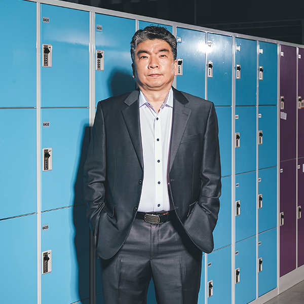
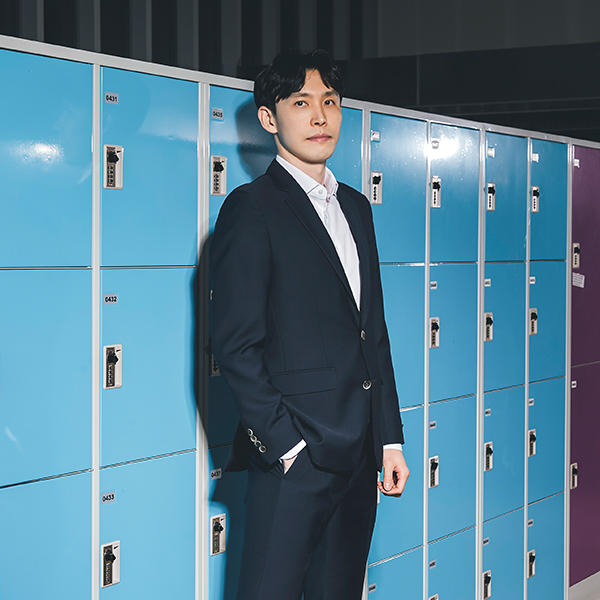
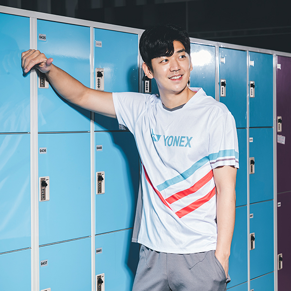
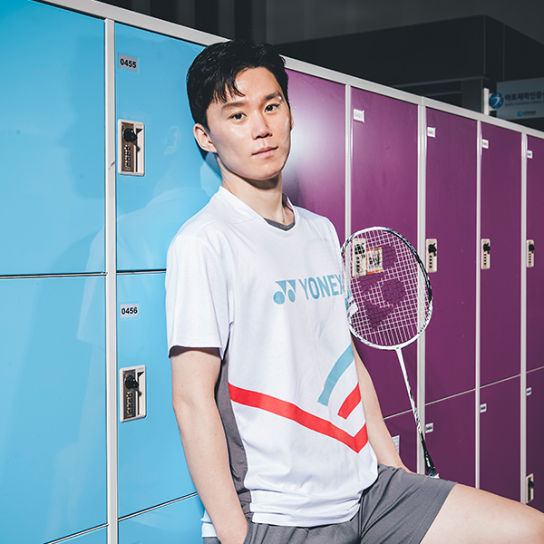
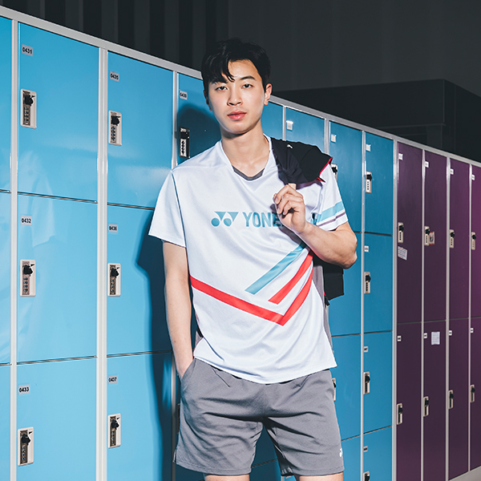
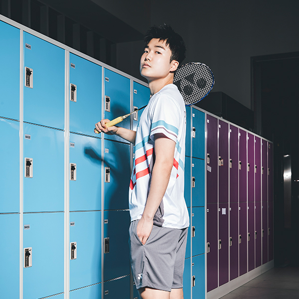
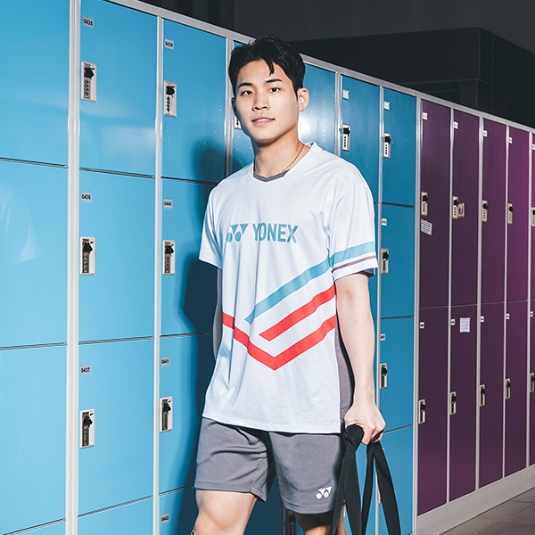
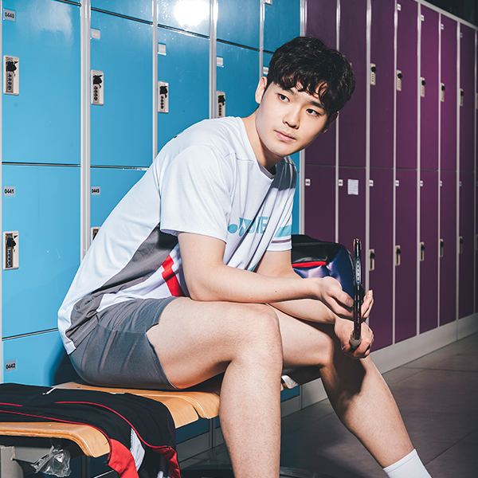
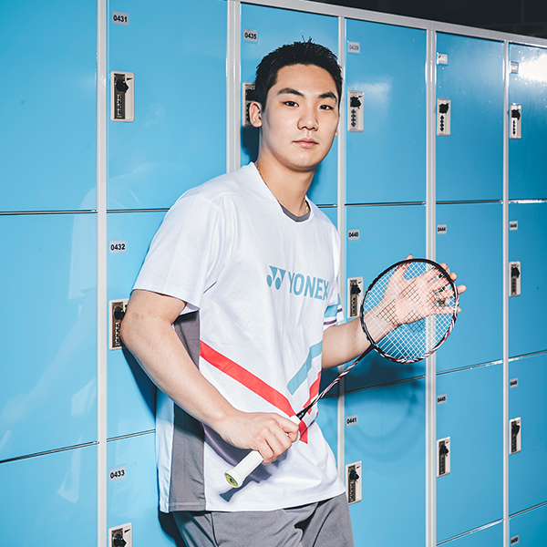
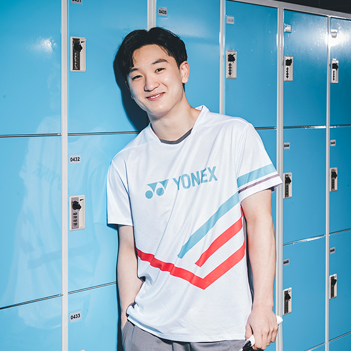

배드민턴단
홈
>
요넥스존
>
배드민턴단

박용제 감독
Park Yong Jae
주요 경력
- 2021 대한배드민턴협회 이사
- 2014 ~ 2015 포스코특수강 배드민턴단 감독
- 2014 ~ 2016 대한배드민턴협회 경기력향상위원
- 2010 ~ 2012 대한배드민턴협회 용구검정위원
- 2010 ~ 2014 대한배드민턴협회 이사
- 2009 ~ 2013 한국초등학교배드민턴연맹 전무이사

안현석 코치
Ahn Hyun Seok
지도자 시절 주요 실적-한국체육대학교 코치
- 2015 하계 유니버시아드 단체 1위
- 2015 전국체전 남자 대학부 단체 1위
선수 시절 주요 전적
- 봄철 종별 배드민턴 리그전 남자 일반부 1위 및 MVP
- 싱가포르 세트라잇 남자 단식 1위
-
이용대 Lee Young Dae
- 출생일 : 1988년 9월 11일
- 신 장 : 180cm / 73kg
- 주종목 : 복식
- 출신교 : 경기대학교
최근성적- 2020
- 말레이시아 마스터즈 남자복식 우승(이용대/김기정)
- 2018
- 마카오 오픈 남자복식 우승(이용대/김기정)
후원용품라켓 : astrox 88 D PRO 신발 : power cushion 65 z 3 -
김용현 Kim Yong Hyun
- 출생일 : 1988년
- 신 장 : 180cm / 80kg
- 주종목 : 단식
- 출신교 : 당진초 - 당진중 - 당진정보고 - 가톨릭대
최근성적- 2020
- 회장기 전국대학실업배드민턴연맹전 남자 일반부 단체 2위
- 2020
- 전국실업대항배드민턴선수권대회 남자 일반부 단체 3위
후원용품라켓 : astrox 88 S 신발 : power cushion 65 z 3 -
김동욱 Kim Dong Wook
- 출생일 : 1993년
- 신 장 : 183cm / 79kg
- 주종목 : 단식/복식
- 출신교 : 국군체육부대
최근성적- 2020
- 전국실업대항배드민턴선수권대회 남자일반부 단체2위
- 2020
- 제63회 전국여름철종별배드민턴선수권대회-대/일 남자일반부 단체2위
후원용품라켓 : NANOFLARE 700 신발 : power cushion 65 z 3 -
전혁진 Jeon Hyeok Jin
- 출생일 : 1995년 6월 13일
- 신 장 : 177cm / 70kg
- 주종목 : 단식
- 출신교 : 동의대학교
최근성적- 2017
- 코리아 마스터즈 배드민턴 선수권 남자단식 우승
- 2015
- 제28회 광주 하계유니버시아드대회 배드민턴 남자단식 금메달
후원용품라켓 : astrox 99 신발 : power cushion 65 z 3 -
이상민 Lee Sang Min
- 출생일 : 1999년
- 신 장 : 170cm / 66kg
- 주종목 : 복식
- 출신교 : 동의대학교
최근성적- 2020
- 회장기 전국대학실업배드민턴연맹전 남자대학부 단체1위
- 2020
- 제63회 전국여름철종별선수권대회 남자대학부 복식3위
후원용품라켓 : astrox 88 d pro 신발 : power cushion 65 z 3 -
김태관 Kim Taek Wan
- 출생일 : 2001년 5월 15일
- 신 장 : 191m / 86kg
- 주종목 : 단식
- 출신교 : 부산동고
최근성적- 2018
- 전국가을철중고배드민턴선수권대회 남자고등부 단체 3위
- 2018
- 화순 전국학교대항배드민턴선수권대회 혼합복식 3위
후원용품라켓 : nanoflare 700 신발 : power cushion 65 z 3 -
김재현 Kim Jae Hyun
- 출생일 : 2002년
- 신 장 : 180cm / 80kg
- 주종목 : 복식
- 출신교 : 광주계림초 - 전대사대부중 - 전대사대부고
최근성적- 2020
- 한국중.고배드민턴연맹 회장기 전국학생선수권대회 남자 고등부 단체 3위
- 2020
- 제58회 전국봄철종별배드민턴리그전-중고 남자 고등부 단체 3위
후원용품라켓 : astrox 100 zz 신발 : power cushion 65 z 3 -
진 용 Jin Yong
- 출생일 : 2003년
- 신 장 : 171cm / 67kg
- 주종목 : 단식/복식
- 출신교 : 당진정보고등학교
최근성적- 2022
- 광주 요넥스 코리아마스터즈배드민턴선수권대회(Super300) 혼합복식 3위
- 2022
- 아시아남·여단체배드민턴선수권대회 남자단체 3위
후원용품라켓 : arcsavor 11 pro 신발 : power cushion 65 z 3